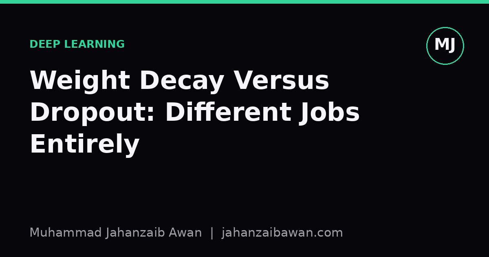

Weight Decay Versus Dropout: Different Jobs Entirely
Both are called regularisers, both shrink overfitting, but they act on completely different parts of a network. Confusing them leads to wasted tuning time and models that fail in avoidable ways.

Why the label 'regulariser' hides the real difference
I have lost count of how many times I have seen weight decay and dropout described in the same breath as if they were two flavours of the same fix. They both appear in the regularisation section of every course, they both reduce the gap between training and validation loss, and both have a single scalar knob to tune. That surface similarity is misleading. Weight decay changes what the optimiser is allowed to do with the parameters. Dropout changes what the network is allowed to rely on at each forward pass. One constrains magnitude, the other constrains co-dependence.
This distinction matters because the two failure modes they address are not the same failure mode. A network can have small, well-behaved weights and still overfit by having a handful of units that memorise idiosyncratic patterns in the training set while the rest of the network does almost nothing useful. Equally, a network can have units that are beautifully redundant and robust to dropout, yet still carry weights so large that the loss surface around them is razor sharp and generalises poorly to slightly shifted inputs. Neither problem is solved by the other's fix as a matter of course, only as a side effect that varies by architecture and dataset.
Because both terms happen to show up as an extra number in the loss or an extra line in a layer definition, it is tempting to treat them as substitutes when tuning a budget of regularisation strength. I want to walk through what each is actually doing mechanically, with a concrete numeric picture, and then say something practical about combining them.
Weight decay: a tax on magnitude
Weight decay, in its classic form, adds a term proportional to the squared norm of the weights to the loss function, so the gradient update includes a small pull towards zero on every step. If a weight sits at 2.0 and the decay coefficient is 0.01, the update subtracts roughly 0.01 times 2.0, so 0.02, from that weight before the task gradient is even applied. Over thousands of steps this steadily discourages any single weight from growing large unless the task gradient consistently pushes back hard enough to justify it. The practical effect is a smoother function: large weights create sharp, high-curvature responses to small input changes, and decay suppresses exactly that.
Consider a small regression network fitting a noisy sine curve. Without decay, the optimiser can find a set of weights that produces a wiggly function threading through every noisy training point, some of those weights growing to values in the hundreds to carve out very local bumps. Add a modest decay coefficient, say 0.001, and those extreme weights become expensive to maintain because the penalty scales with the square. The network settles for a flatter fit that misses a few noisy points but tracks the underlying signal far better on held-out data. This is a direct, algebraic constraint on the hypothesis space, independent of how the network is evaluated at test time.
What weight decay does not do is force the network to distribute its representation. It is entirely possible to have a decayed set of weights where one unit still carries almost all the useful signal for a given input pattern, provided none of the individual weights are large enough to trigger the penalty. Decay controls scale, not redundancy.

Dropout: forcing the network to not rely on anyone
Dropout works by randomly zeroing a fraction of unit activations during training, commonly somewhere between ten and fifty per cent depending on the layer, and then using the full network at test time with an appropriate rescaling. The mechanism this creates is different in kind from weight decay. Because any given unit might be silenced on any given forward pass, the network cannot afford to build a solution where one unit is solely responsible for detecting an important pattern. If it does, that pattern is simply invisible on roughly half the training batches, and the loss on those batches punishes the network for depending on a unit that is not there.
Take a network trained to detect a particular texture in an image patch. Without dropout, it might discover a single convolutional filter that responds strongly to that texture and route the rest of the computation around that one signal, because that is the most efficient path the optimiser can find. With a dropout rate of thirty per cent on that layer, roughly three in ten times that filter's output is masked out entirely, so the loss forces the network to also develop a second, partially overlapping filter that can catch the same pattern when the first is missing. The result is an ensemble-like redundancy: at test time, when all units are present, the network has several partially correlated ways of detecting the same feature, which tends to make its predictions more stable to noise and to unseen variation in the input.
Note what this does not touch directly. Dropout says nothing about how large any individual weight is allowed to become. A network can have units with enormous weights and still be heavily regularised by dropout in the sense of redundancy, though in practice the two interact because large weights combined with random masking can create high-variance gradient estimates during training, which is one reason dropout and weight decay are often used together rather than as alternatives.
What this means for how you actually tune a model
The practical upshot is that if your model overfits by memorising specific training examples with a small number of dominant units, dropout is usually the more targeted intervention, because it directly attacks that dependency structure. If your model overfits by finding an unnecessarily sharp, high-magnitude solution that a slightly different training set would have produced very differently, weight decay is the more targeted intervention, because it constrains the magnitude directly rather than hoping redundancy solves the problem as a side effect.
In practice I treat them as answering different diagnostic questions rather than as two settings on the same dial. If validation performance degrades sharply under small input perturbations or under a slightly different train and test split, that points towards a magnitude problem worth addressing with decay. If validation performance is fine on clean data but the model shows brittle behaviour when specific units are ablated or when architecture size is reduced, that points towards a redundancy problem worth addressing with dropout. Tuning both together, starting from small values and increasing cautiously while watching the validation curve rather than the training curve, avoids the common mistake of cranking one up to compensate for a problem the other was actually designed to solve.
The single habit worth keeping is to never change both at once during a tuning sweep. Vary one, hold the other fixed, and read the validation curve honestly. Confusing the two by tuning them jointly as if they were one lever is how people end up with regularisation settings that are strong on paper but do not actually fix the failure mode they are chasing.